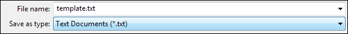
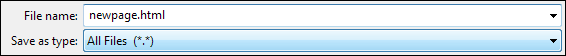
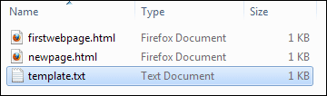
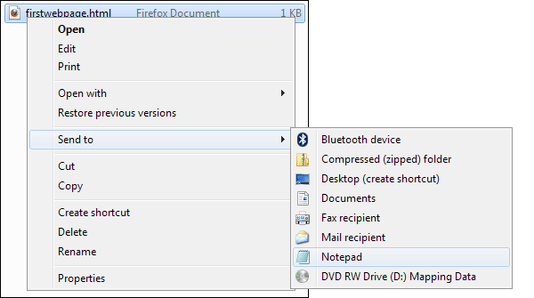
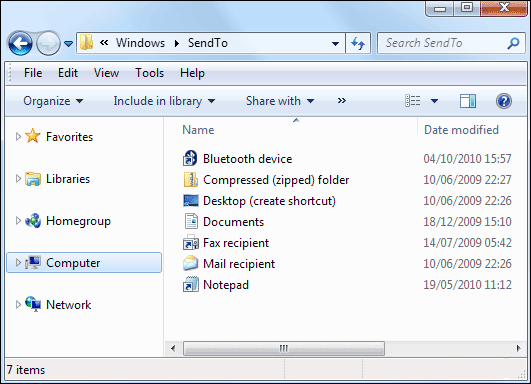
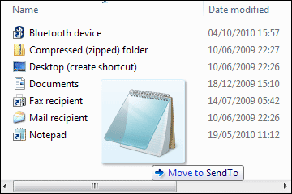

Create a Basic HTML Template
We've produced a video to go with this lesson. It's recommended that you read the text below as well, though. The video is here:
While you have the Windows Explorer or Finder screen open, you can save your current HTML skeleton as a template. That way, you don’t have to type it all out every time you want a new web page.
In your text editor, delete any text between your two TITLE tags. Now click File > Save As. From the Save As dialogue box change the name of your web page to template.txt:

Click Save to save the code as a text file. You will be returned to your text editor. Click File > Save As again. Now change the name of the file to newpage.html. In the Save As Type box in Windows, change it to All Files:

Save the file and switch to Windows Explorer or Finder. You should now see three pages:

One of these, the template is a text file rather than a HTML file. From now on, you can open the template text file, and repeat the process above: Click File > Save As, change the Save As Type box to All Files, then type a new name for your web page, not forgetting the html ending.
There is a problem, however. If you were to double click your newpage.html file it would open up in your browser. But you will want to open it up in Notepad so that you can edit the file and make changes.
To solve the problem, you can add an item to the Send to menu in Windows (Macs will have an Open With right-click menu. Your text editor should be on there). This appears when your right-click the file:

In the image above, we have Notepad on the Send to menu. Selecting this item means that we can quickly open up the code in Notepad.
To add an item to the Send to menu, switch back to your Explorer window. In the address bar at the top, enter the following:
%APPDATA%\Microsoft\Windows\SendTo
Press the Enter key on your keyboard and you will be taken to the Send to folder:

You can now drag and drop items from your Start menu to this folder. (Make sure Windows Explorer doesn’t fill the whole of your screen by clicking the Restore Down icon just to the left of the Red X.)
Click your Windows Start button. From the All Programs > Accessories menu, locate Notepad again. Hold down your left mouse button on Notepad. Keep it held down and drag across to your Windows Explorer and your Send To folder:/

Let go of your left mouse button and Notepad will be on your Send To menu when you right-click a file in Windows Explorer.
Now you can quickly open up your HTML code in Notepad and makes changes to it.
To recap this section, here are the important points again:
- The HTML skeleton is the foundation on which most internet pages are based
- HTML is written in Tags
- Tags usually come in pairs
- A Tag is a word surrounded by angle brackets, e.g.: <HTML> </HTML>, <HEAD> </HEAD>, <TITLE> </TITLE>
- A pair of tags has as a starting Tag and an end Tag. The end Tag is preceded by a forward slash
- Add <!DOCTYPE HTML> to the top of all your HTML pages.
In the next section, you’ll see some more basic tags.